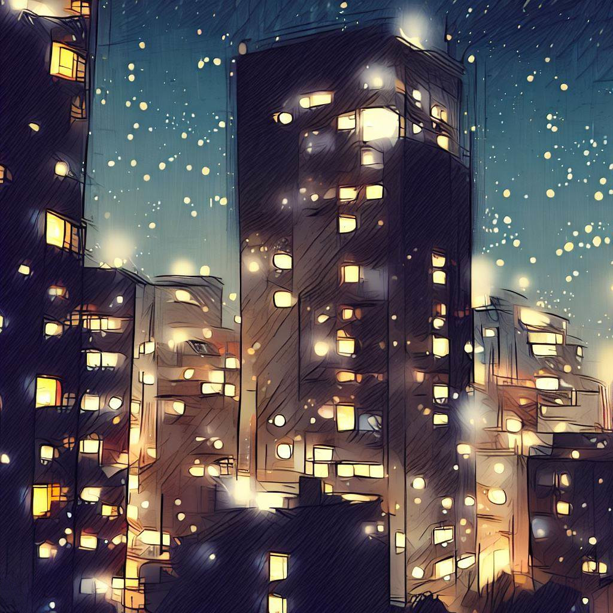
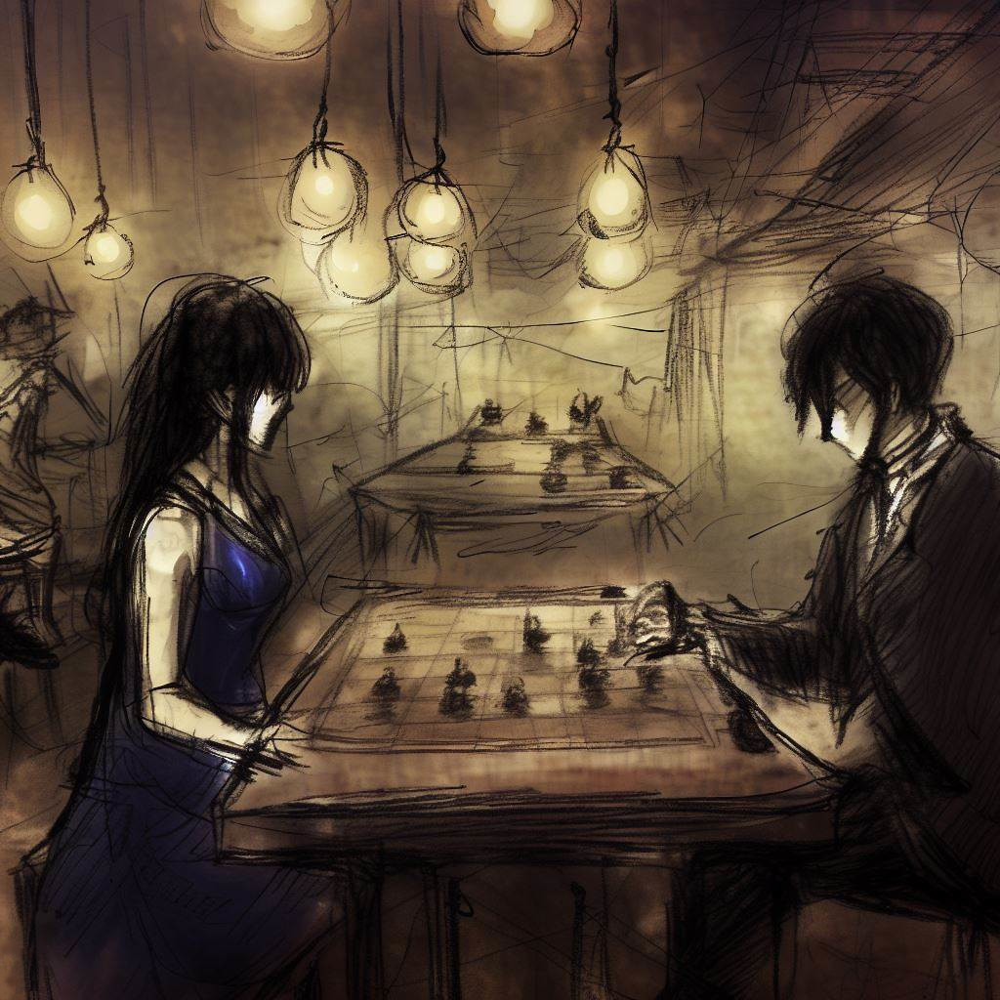
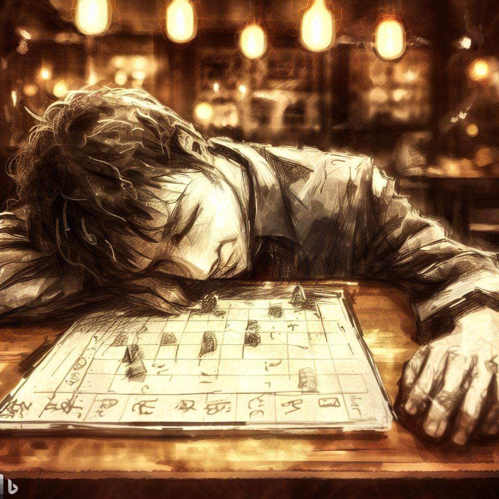

Komayo: The Mystic Echoes of the Ogi Game
I want to say thank you to Komayo. She taught me a very interesting strategy game. I will tell our meeting. It is a memory that I really like and I want to share it here.
An Escape from the Office
As the light of day gave way to the hues of twilight, I exited my workspace. I traded the sterile, chilly atmosphere of air conditioning for the gentle and invigorating evening breeze of Osaka.
The hustle and bustle of the day gradually receded, making room for the tranquility of the night. The clutter of the day's work in my mind began to clear, replaced by the endless expanse of the starry sky and the peaceful calm of the city.

Guided by a sense of adventure, I traversed the city's labyrinthine backstreets. The day's monotony melted away with each turn, unveiling the allure of the unseen. The comforting silhouettes of skyscrapers cloaked in the night, their lights shimmering against the concrete sky, bore little resemblance to their stark, daytime counterparts.
The dynamic atmosphere of shopping alleys, the aroma of roadside eateries, and the quiet hum of evening conversations crafted an exhilarating urban scene. Despite the day's fatigue, my mind yearned for an intellectual engagement, a respite from the day's concerns. It was then that a humble sign caught my eye: the Regency Bar, a haven for shogi aficionados.
The sight of the Regency Bar, tucked away in this serene alleyway, stirred a quiet yet compelling urge to enter. This locale, promising exciting challenges and a well-deserved respite, rekindled dormant curiosity and a subtle fascination.
The Den of the Game
The dim, soft lighting of the Regency Bar greeted me as I stepped in, its inviting ambiance exuding a sense of tranquility. The serene atmosphere of the place was steeped in the unfolding of countless shogi games, undoubtedly illuminating many a player's evening over generations.
Before immersing myself in the world of the game, I ordered a glass of sake at the bar. The antique wooden floor groaned softly under my footsteps as my eyes adjusted to the muted light. The gentle rustling of shogi pieces, the whispers of conversation, and the rustle of hand fans added an air of mystique to the atmosphere. The aroma of the aged wood, mingling with that of the incense, soothed my senses and readied me for the intellectual engagement that lay ahead.
Patrons, both men and women of all ages, passionately engaged in their games of shogi. Each expressed in their own way the tension, joy, or disappointment associated with every move. It was a silent ballet of strategies and minds unfolding before my eyes.
Scouting for an opponent for the evening, my gaze landed on a woman seated alone at a secluded table. Her calm demeanor and subtle beauty piqued my curiosity. With a determined yet discreet stride, I approached, sketched a polite smile, and proposed a game.

The Nocturnal Lesson
Her response to my proposition was a smile that illuminated her face, a tacit acceptance requiring no words.
With unexpected grace, she unveiled the game board, previously hidden under a silky cloth. My surprised gaze fell on a shogiban smaller than usual, with fewer squares and pieces. Instead of the traditional 9x9 of standard shogi, an 8x8 chessboard sprawled before me, prepared to accommodate only 18 pieces per player. Before I could formulate a question, the elegant stranger began to explain, her voice bathing the air in the room like a gentle summer breeze.
"This is not the traditional shogi you are familiar with, it's ogi, a variant," she declared, an amused look lighting up her gaze.

"Among this assortment of figures, one stands out in its majesty. Borrowing the dignity of the bishop and the freedom of the knight," she specified, indicating the elegant centerpiece. "This is the princess, reigning supreme over the ogiban, adding a layer of complexity to our contemporary version of shogi."
Her smile widened at the sight of my surprise. A teasing glint sparkled in her eyes, a playfulness that only added to the mystery surrounding her. She began positioning the pieces on the board, her nimble and precise fingers animating our future battlefield.
As she arranged the pieces, I noticed another divergence: rooks standing in the corners of the ogiban. "The traditional lances are replaced by these rooks," she explained as if reading my thoughts, "bringing an additional dimension to our bout."
The pieces were now arranged, each rook, each general, each pawn aligned in perfect harmony. While anticipating the forthcoming battle, I found myself irresistibly drawn to this newly unveiled puzzle, made even more intriguing by the golden gleam of the pieces and the sparkling gaze of my enigmatic opponent.
Trial of the Mind
The ticking of the clock paced the passing time, with the silence of the battle only interrupted by the faint noise of the pieces on the board. The bishop moved with determination, the knight leaped with audacity, and the princess dominated the battlefield with impressive efficiency. The almost imperceptible rhythm of the combat filled the room, lending it a palpable tension.
With disconcerting skill, my enigmatic opponent directed her pieces. Those that were captured, instead of being eliminated, were cleverly reintroduced, parachuted behind my lines, infusing the battle with a changing dynamic. Each move was a lesson in tactics, each piece connected to another by invisible links woven with almost surgical precision.
I held firm, manipulating my pieces with fierce determination, repelling her assaults with a carefully orchestrated defense. Yet each decision seemed to draw from my energy reserves, each move becoming increasingly heavy to perform. My eyelids began to weigh, fatigue trying to gain ground.
And as I struggled to keep my eyes open, sleep, that stealthy adversary, took over. My body yielded to exhaustion, the bar lights dancing before my darkening eyes. I plunged into a soothing darkness, the last image etched in my memory being the victorious smile of my mysterious opponent, twinkling like a distant moon in an inky sky.

Echoes of the Dawn
Time seemed to have evaporated, swallowed by the darkness enveloping my mind. The transition into the obscure was gentle and soundless, leaving me navigating through a bewildering fog. My mind wrestled within an ocean of confusion, striving to surface from the darkness.
Like a lost boat in the night, I eventually found my way back to the daylight. My eyes opened to the almost unchanged room, bathed in the soft light of dawn. The ogiban stood as I had left it, a silent witness to the night's battle. However, my opponent's seat was now vacant, the mysterious aura of the young woman had dissipated like a dream at daybreak.
The weight of her absence was palpable, an indefinable emptiness that made the air heavy, rendered the room quieter. My gaze slid across the ogiban and halted on a carefully folded piece of paper next to the game board. With a certain apprehension, I picked it up.
A single word was inscribed on it, "Thank you," accompanied by a name - "Komayo". An elegant signature, a last vestige of this fleeting yet impactful encounter, spent at the Regency Bar playing ogi with the elusive and fascinating Komayo.